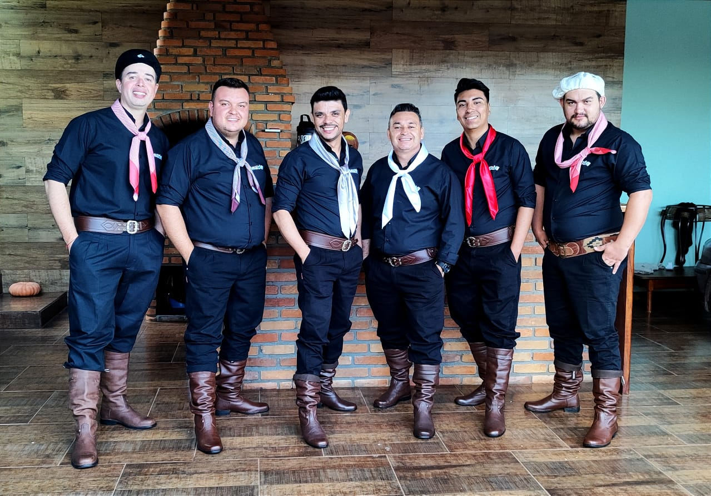

Grupo Vanerô é voltado para animação em shows / bailes com um repertório diversificado que atende tanto baile tradicionalista gaúcho ou show misto com um estilo de vanerão com muita percussão e swing. O grupo Vanerô é originário da Banda Acústico 7 já conhecida no mercado há mais de 15 anos, a qual atenta à constante evolução e tendências do mercado artístico musical, se viu obrigada a dar um “upgrade” trazendo uma nova identidade e a atual nomenclatura.
Antonio Mendes Vaz
Bateirista
Rodrigo Prestes
Sanfoneiro / Produtor
Leandro Pereira
Vocalista / Produtor
Juliano Pereira
Percussão / Vocal
Yuri Ferraz
Guitarrista
Carlos Eduardo Soares
Baixista